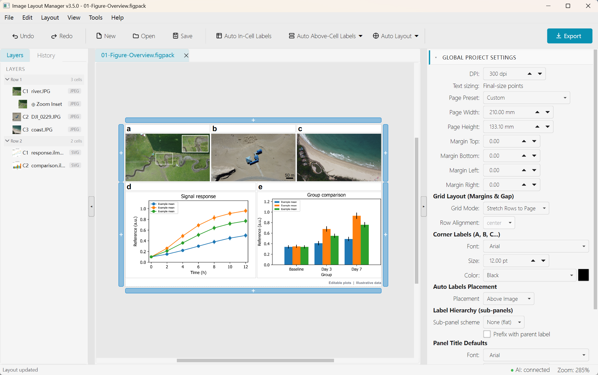
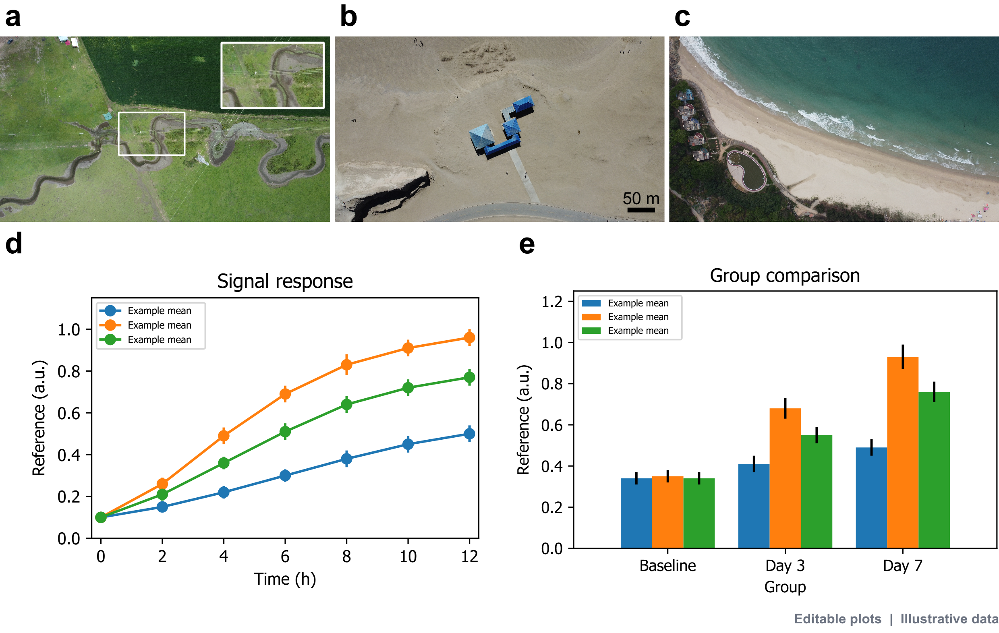
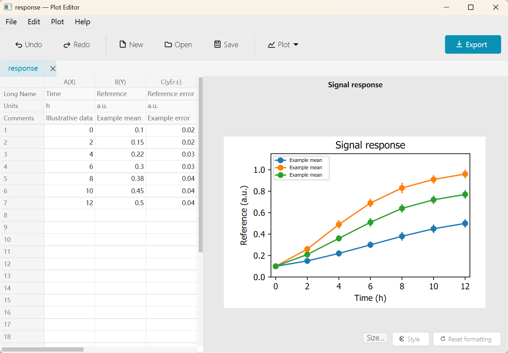
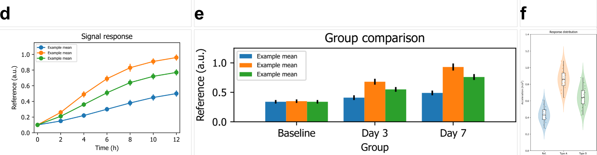
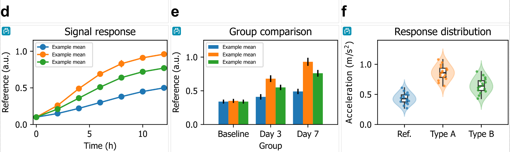

Windows
Install from Microsoft Store for automatic updates, or download the installer directly.
Create scientific plots, arrange multi-panel figures, and export for publication.
Inspired by Laziness. Made for research.
Arrange images and editable plots, add labels, insets and scale bars, then export a complete figure for your paper.


Import Excel or CSV data, add error bars, and adjust styles and figure size. Save an editable SVG to use in your layout.

Turn on Reflow to adapt native plots to their panels while preserving text and line widths in real points. Plots in the same row align their plotting areas automatically.


Reflow works with native .ilmplot.svg files. Ordinary images and SVGs keep their original geometry. Locking the cell aspect ratio or using plot-area alignment pauses Reflow.
Create plots, align panels, match text sizes, and add the finishing annotations before export.
Create line, scatter, column and distribution plots from Excel or CSV data. Add error bars and significance annotations, reuse styles, and save editable .ilmplot.svg files.
Mark each chart's plotting area, then match plot heights and bottom axes across panels — in grid or freeform layouts, without touching the source files.
Pick text in SVG or raster panels and match its size across the whole figure, leaving the original files untouched.
Render complex formulas, symbols, and chemical notations directly on panels using standard LaTeX syntax.
Create insets and magnified views with ease. Overlay sub-images with customizable borders to highlight key details.
Split cells infinitely in vertical or horizontal stacks to create sophisticated, multi-tiered layouts.
Export publication-ready PDFs with high-DPI image embedding while keeping text and labels as resolution-independent vector objects.
Add and fine-tune professional scale bars—an essential requirement for microscopy and imaging figures.
Span a single label across several cells to mark rows, columns, or conditions — drag the label band outward to adjust its stacking order.
Switch to freeform placement and reorder overlapping panels and insets by dragging them in the Layers panel, Photoshop-style.
Learn plotting, layout and export with guided practice projects in ILM and the Plot Editor.
Connect Claude, Cursor, Windsurf, Cline, or other MCP hosts to build, style, annotate, preview, save, and export figures through the running app.
A repeatable process from canvas to camera-ready export.
Render, pack, inspect, edit, and connect AI agents through the bundled CLI — same quality as the GUI, plus live MCP control.
Export .figpack / .figlayout to PDF, TIFF, JPG, or PNG with the same renderer as the GUI.
Bundle layouts with assets into .figpack, or extract .figpack to folders.
Query page size, DPI, cell counts, and metadata (text or JSON output).
Connect an AI assistant to the running app to arrange panels, adjust styles, add annotations, and save or export the figure.
Included with the Windows installer and macOS app bundles (Apple Silicon and Intel), or run from source. See CLI docs for setup and commands.
Available for Windows and macOS. Choose the build for your computer.
Install from Microsoft Store for automatic updates, or download the installer directly.
Choose your chip: Apple Silicon (M-series) or Intel. Check Apple menu → About This Mac to find yours.
Loading release notes…
Looking for older versions? View all releases